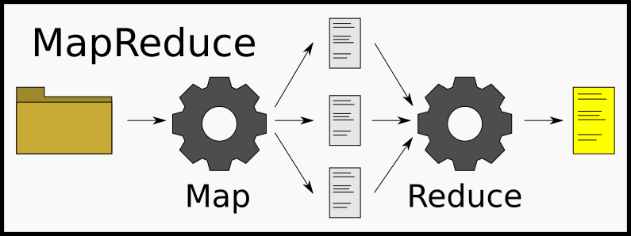

Hadoop is an open-source, free, Java-based programming framework that helps processing large datasets in a distributed environment and the problems that arise when trying to harness the knowledge from BigData, capable of running on thousands of nodes and dealing with petabytes of data. It is based on Google File System (GFS) and originated from the work on the Nutch open-source project on search engines.
Modified 2020-04-01
Hadoop also offers a distributed filesystem (HDFS) enabling for fast transfer among nodes, and a way to program with MapReduce.
It aims to strive for the 4 V’s: Volume, Variety, Veracity and Velocity. For veracity, it is a secure environment that can be trusted.
¶Milestones
The creators of Hadoop are Doug Cutting and Mike Cafarella, who just wanted to design a search engine, Nutch, and quickly found the problems of dealing with large amounts of data. They found their solution with the papers Google published.
The name comes from the plush of Cutting’s child, a yellow elephant.
- In July 2005, Nutch used GFS to perform MapReduce operations.
- In February 2006, Nutch started a Lucene subproject which led to Hadoop.
- In April 2007, Yahoo used Hadoop in a 1 000-node cluster.
- In January 2008, Apache took over and made Hadoop a top-level project.
- In July 2008, Apache tested a 4000-node cluster. The performance was the fastest compared to other technologies that year.
- In May 2009, Hadoop sorted a petabyte of data in 17 hours.
- In December 2011, Hadoop reached 1.0.
- In May 2012, Hadoop 2.0 was released with the addition of YARN (Yet Another Resource Navigator) on top of HDFS, splitting MapReduce and other processes into separate components, greatly improving the fault tolerance.
From here onwards, many other alternatives have born, like Spark, Hive & Drill, Kafka, HBase, built around the Hadoop ecosystem.
As of 2017, Amazon has clusters between 1 and 100 nodes, Yahoo has over 100 000 CPUs running Hadoop, AOL has clusters with 50 machines, and Facebook has a 320-machine (2 560 cores) and 1.3PB of raw storage.
¶Why not use RDBMS?
Relational database management systems simply cannot scale horizontally, and vertical scaling will require very expensive servers. Similar to RDBMS, Hadoop has a notion of jobs (analogous to transactions), but without ACID or concurrency control. Hadoop supports any form of data (unstructured or semi-structured) in read-only mode, and failures are common but there’s a simple yet efficient fault tolerance.
So what problems does Hadoop solve? It solves the way we should think about problems, and distributing them, which is key to do anything related with BigData nowadays. We start working with clusters of nodes, and coordinating the jobs between them. Hadoop’s API makes this really easy.
Hadoop also takes very seriously the loss of data with replication, and if a node falls, they are moved to a different node.
¶Major components
The previously-mentioned HDFS runs on commodity machine, which are cost-friendly. It is very fault-tolerant and efficient enough to process huge amounts of data, because it splits large files into smaller chunks (or blocks) that can be more easily handled. Multiple nodes can work on multiple chunks at the same time.
NameNode stores the metadata of the various datablocks (map of blocks) along with their location. It is the brain and the master in Hadoop’s master-slave architecture, also known as the namespace, and makes use of the DataNode.
A secondary NameNode is a replica that can be used if the first NameNode dies, so that Hadoop doesn’t shutdown and can restart.
DataNode stores the blocks of data, and are the slaves in the architecture. This data is split into one or more files. Their only job is to manage this access to the data. They are often distributed among racks to avoid data lose.
JobTracker creates and schedules jobs from the clients for either map or reduce operations.
TaskTracker runs MapReduce tasks assigned to the current data node.
When clients need data, they first interact with the NameNode and replies with the location of the data in the correct DataNode. Client proceeds with interaction with the DataNode.
¶MapReduce
MapReduce, as the name implies, is split into two steps: the map and the reduce. The map stage is the «divide and conquer» strategy, while the reduce part is about combining and reducing the results.
The mapper has to process the input data (normally a file or directory), commonly line-by-line, and produce one or more outputs. The reducer uses all the results from the mapper as its input to produce a new output file itself.

When reading the data, some may be junk that we can choose to ignore. If it is valid data, however, we label it with a particular type that can be useful for the upcoming process. Hadoop is responsible for splitting the data accross the many nodes available to execute this process in parallel.
There is another part to MapReduce, known as the Shuffle-and-Sort. In this part, types or categories from one node get moved to a different node. This happens with all nodes, so that every node can work on a complete category. These categories are known as «keys», and allows Hadoop to scale linearly.
¶References
- YouTube – Hadoop Tutorial For Beginners | What Is Hadoop? | Hadoop Tutorial | Hadoop Training | Simplilearn
- YouTube – Learn MapReduce with Playing Cards
- YouTube – Video Post #2: Hadoop para torpes (I)-¿Qué es y para qué sirve?
- Video Post #3: Hadoop para torpes (II)-¿Cómo funciona? HDFS y MapReduce
- Apache Hadoop Releases
- Video Post #4: Hadoop para torpes (III y fin)- Ecosistema y distribuciones
- Chapter 2 – Hadoop: The Definitive Guide, Fourth Edition (pdf,code)